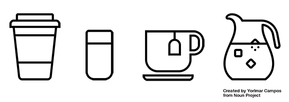

1.
Read the following two articles about icon design:
2.
What are the things you need to pay attention to when designing a good icon? What are the dos and the don'ts?
3.
Have a look at the right. Scribble the missing icon. Try to addopt the style to make your icon fit into the row.
Then click on the image to reveal the original icon design and compare it to your result. In which way is yours different.
What is better in your design, what could still be improved?
4.
Tattoos become blurry over time and lose their sharpness. Think about how you should design icons for tattoos with data visualization via icons to reduce these effects?
Scribble the missing icon: a cup of tea.
Scribble the missing icon: a bag of popcorn.
Scribble the missing icon: a double cheeseburger.